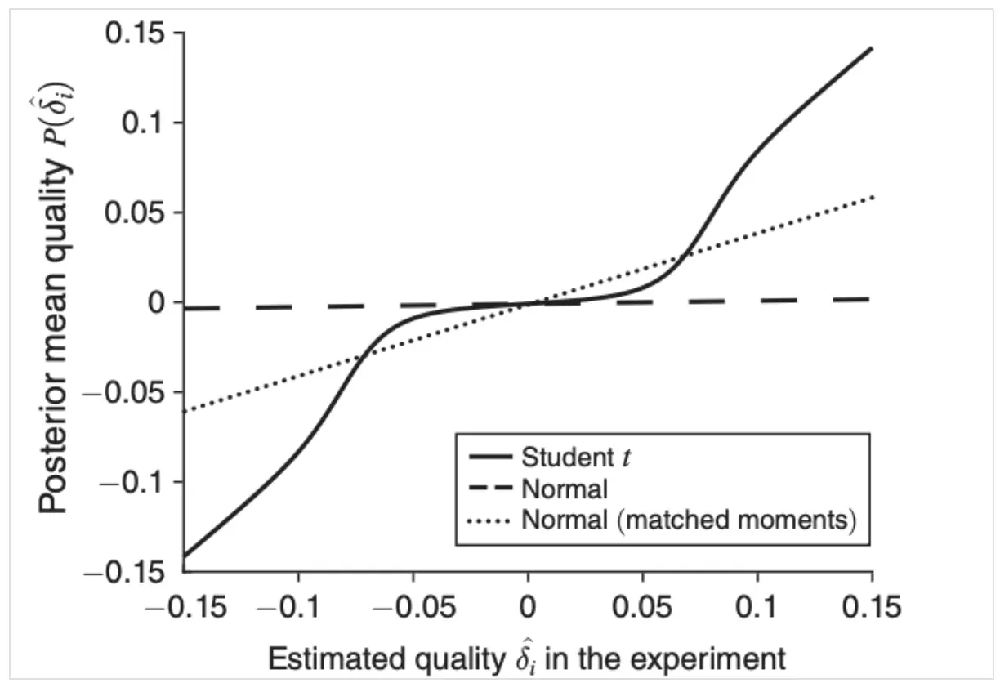

以下内容重在描述解决的问题、大概思路和可能收益，详细数学和细节参考引用论文。
1. 背景
AB实验来自于来自科学又夹杂着玄学，下面是其中最常见的两个玄学。
1.1. 发布决策问题
AB实验是否显著依赖假设检验，假设检验会有某种阈值来决定是否显著，比如P值小于0.05。
但是为什么P值是0.05？这一标准是否是普适的？是否对不同行业不同公司有更优的标准？
1.2. 流量分配问题
对大规模实验平台来说，流量始终是一种稀缺资源。如何为实验选择合适的流量？
常规答案是进行power分析，实验者根据自己选择的最小观测的效果（MDE）结合实验运行时长、样本方差评估出需要多少用户参与实验。
但这也只是把原问题转换为了另一个形式，实验者应该如何选择自己的MDE？不同场景下是否有科学的MDE选择指南？
2. 研究模型
2.1. 场景建模
此处使用分层模型。
公司会产生很多创意：i = 1, 2,…,I，每个创意质量对应随机变量\(\Delta_i\)，此处质量指创意全量后提升率；
这些创意的质量独立同分布，来自质量分布G；
公司发布一个创意的成本为c；
对每个创意质量公司通过AB实验进行评估，实验估计提升率为随机变量\(\hat{\Delta}_i \sim N(\Delta_i, \sigma^2/n_i)\)；
两个随机变量\(\Delta_i\)和\(\hat{\Delta}_i\)的值分为别\(\delta_i\)和\(\hat{\delta}_i\)。

2.2. 收益估计
根据实验效果和创意质量分布，通过贝叶斯方法可以计算创意质量的条件期望值\(E[\Delta_i|\hat{\Delta}_i=\hat{\delta}_i,n_i,\sigma^2,G]\)，记为P(_i, n_i)，它的表达式是创意i的质量函数。
3. 发布最佳策略
3.1. 结论
当P(_i, n_i)大于发布成本c时，就对其进行发布。
3.2. 解释
质量分布与观测值结合，可以实验评估出创意的条件期望质量。
计算过程采用贝叶斯方法，已经考虑了质量分布有观测质量分布的波动性，并且可以证明此估计值优于单出基于实验观测值的估计。
3.3. 微软的研究

上图示例中微软按实验有两千万用户参与绘制不同的后验效果。
其中黑色曲线来自微软2019根据历史实验估计得出。它对应的质量分布为自由度为1.3的t分布，期望值为-0.09%，属于肥尾分布；其它是模拟不同质量分布的效果，属于细尾分布。
此研究为微软提供了以下发现：
- 微软创意的质量分布为肥尾分布，依据实验效果不同，它会对后验质量产生不同的影响：
- 对实验效果越弱的创意，使后验质量估计值越趋向0，因为它们更大概率来自运气；
- 对实验效果越强的创意，对后验影响估计值影响越少，因为靠运气得到的概率很低。
- 实验后的后验质量估计可直接通过贝叶斯方式计算，基于后验质量决策有以下影响：
- 基于以上实验条件，可计算出创意发布的p值阈值： 如果发布成本为零，创意应该被发布的p值阈值为32%； 如果发布成本为质量指标的0.01，创意应该被发布的p值阈值为0.85%； 如果发布成本为质量指标的0.05，创意应该被发布的p值阈值为0.015%；
- 根据微软对实验的的回测，基于最优发布策略可提升核心指标收益在5%级别，提升结果是显著的；
- 回测发现2%的历史实验提供了74.5%的收益，这是一个极端版的二八定律。
4. 最佳实验策略
4.1. 结论
如果质量分布肥尾，应该对所有创意都进行实验（小流量多数量）；
如果质量分布细尾，应该将所有资源用于运行单个实验（大流量少数量）。
4.2. 解释
假设创意质量分布期望为正向，基于4的最优发布策略，可以计算得到的投入用户进行实验的平均收益提升，称为生产函数：
\[f_i(n_i)\equiv \mathbb{E}[P(\hat{\Delta}_i)^+]-\mathbb{E}[\Delta_i]^+\]
由于总流量是确定的，需要分配给不同的创意（此处不考虑分层架构或者认为发生在特定流量层下），则实验流量分配转化为总成本固定下的最优化问题。
生产函数的形状与质量分布是否肥尾有关，以质量分布为t分布建模：
- 如自由度小于3，质量分布为肥尾，生产函数为凹函数；
- 如自由度大于3，质量分布为细尾，生产函数为凸函数。
如果共N个用户平均分配个I个创意进行实验（每个实验n个用户），产生的整体收益为：
\[Y = I \cdot f(\frac{N}{I}) = I \cdot f(n)\]
根据生产函数形状可得到以上结论。
5. FAQ
5.1. 质量分布如何得到？
以上推导都基于质量分布G，而现实中它是未知的，可以通过历史实验进行评估，比如使用最大似然估计法、Lindsey’s Method等，此处不做展开。
5.2. 以上结论是否有前置要求？
在以上研究中，假设公司创意数量不是瓶颈，且创意质量不会随数量的增加而下降。
附录：依赖的统计知识
分层模型（hierarchical model ）
此模型观测值分布的参数也是随机产生的，参数值来自另一个分布（套娃模式）。 一个现实的例子： 随机从学校抽取一个学生，让这个学生做一份试卷，最后试卷的评分。 上图为例子的一种建模： \(\theta \sim N(\mu,\tau^2)\)，代表不同学生知识掌握程度的建模，此处分布的两个参数是已知的； \(Y \sim N(\theta, \sigma^2)\)，代表被抽取学生考试得分。 ## 肥尾分布（Fat-tailed distribution） 相对正态分布或指数分布来说中间更细尾巴更粗的分布。
著名的肥尾分布是幂律分布、帕累托分布，伴随着它们出现的名词是“二八定律”、“黑天鹅”等。
一个正态分布与肥尾分布对比的例子：
正态分布：正负三个标准差可以覆盖99.7%的概率，正负四个标准差以外的事件几乎是不存在的；
肥尾分布：4%的事件发生在八个标准差之外。
参考文献
- Azevedo, Eduardo M., Alex Deng, José Luis Montiel Olea, and Glen E. Weyl, “Empirical Bayes Estimation of Treatment Effects with Many A/B Tests: An Overview.,” AEA Papers and Proceedings, May 2019, (109), 43–47.
- Azevedo, Eduardo, Alex Deng, José Luis Montiel Olea, Justin Rao, and Glen E. Weyl. “A/B Testing with Fat Tails.” Journal of Political Economy, 128 (12) : 4614-4672, 2020.